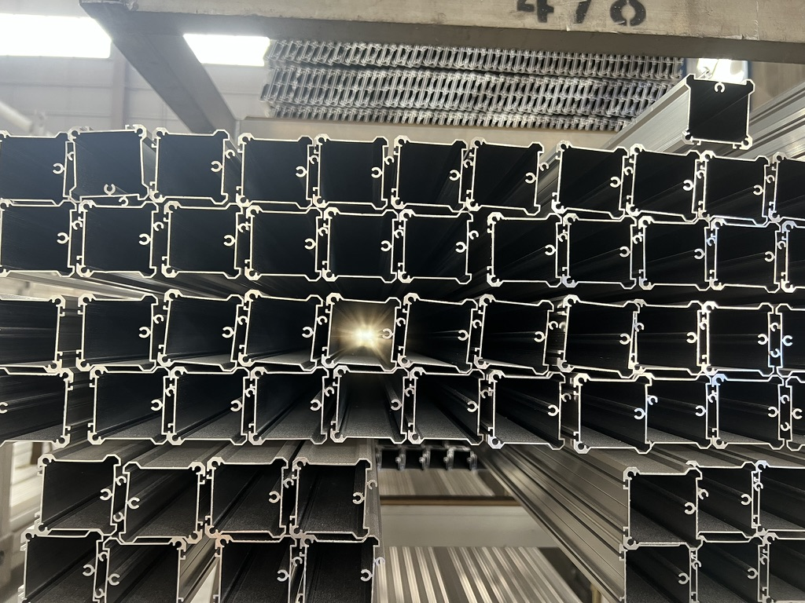

Taotao business-visit photo for product context. It does not prove the specification or quality of a particular order.
An overseas window importer has two quotes for what appears to be the same aluminum frame. Both suppliers have sent product photos. One gives a lower unit price, but neither quotation identifies the drawing revision. Before paying for a sample or deposit, the buyer needs to decide whether the offers actually describe the same item.
Why a profile name is not enough
A profile is defined by more than its broad product name. Cross-section, wall dimensions, alloy and temper, cut length, surface finish, packaging and the inspection basis affect what the buyer receives. ASTM lists B221-21 as a specification for aluminum and aluminum-alloy extruded profiles and related forms. Citing a standard name on a quote does not demonstrate that a particular batch or dimension meets the buyer's drawing.
Taotao's same-item comparison sheet
| Match before comparing price | Ask each seller for | Buyer check |
|---|---|---|
| Design identity | Profile drawing number and revision; cross-section and critical dimensions | Are both quoting the exact drawing? |
| Material | Stated alloy and temper; applicable material specification and edition | Does each offer identify the same material? |
| Finish and supply form | Finish reference, cut length, quantity, packaging and handover term | Are the delivered forms and scope comparable? |
| Batch evidence | Authorized material record and dimensional inspection method for the actual lot | What record will support acceptance? |
Compare every row against the purchase order and approved physical sample. If a seller proposes a substitution, ask for a revised drawing and written acceptance before production. A generic certificate or a sample from another production run is only background evidence; it cannot establish the ordered lot's conformity.
The Taotao window and door range can help define the product inquiry. Specific alloy, tolerances, finish and supplier capability remain to be verified for the proposed model and order.
Continue, pause or escalate
- Continue: both quotes refer to the same approved drawing, material, finish, quantity and acceptance plan.
- Pause: the cheaper offer omits a drawing revision or substitutes a material without clear approval.
- Escalate: critical dimensions, test scope or material evidence conflict; ask the project engineer or independent testing specialist to resolve the specification before deposit.
Katherine's experience reviewing manufacturing businesses informs this document-to-delivery check. It does not imply access to private bank information or provide a formal technical certification.